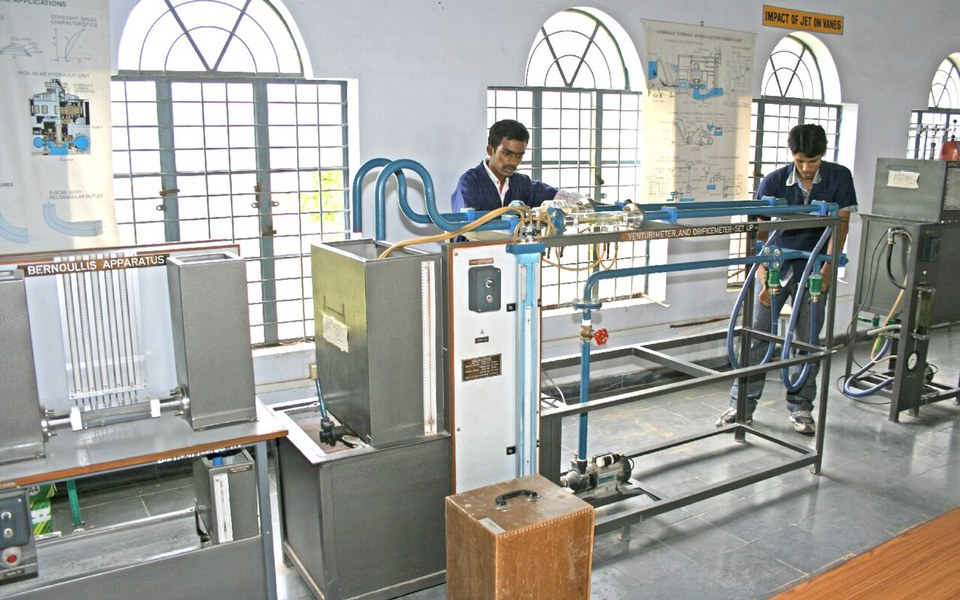
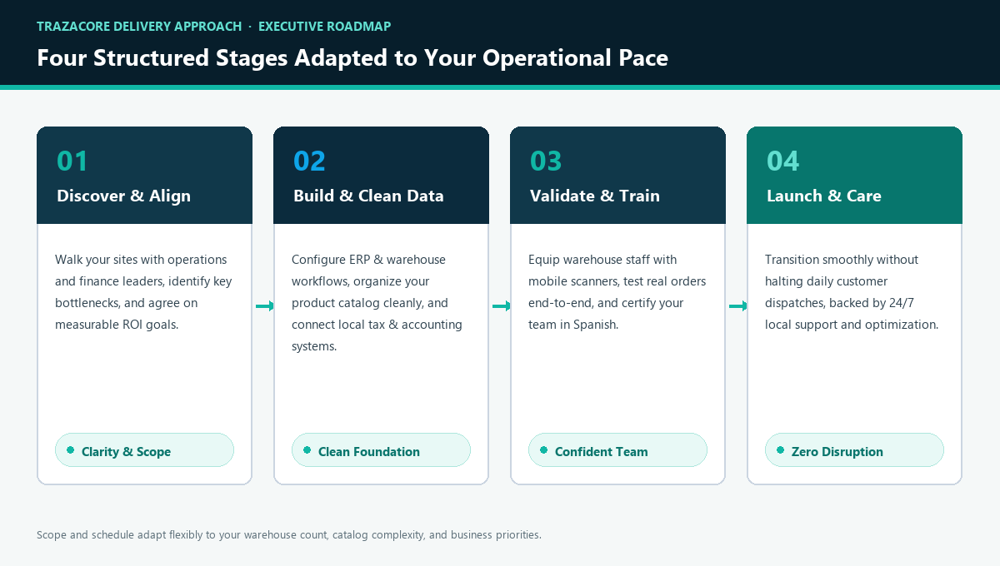

Odoo Enterprise & Procurement
Connect quoting, multi-currency supplier purchasing, dual approvals, and live stock availability across branches.

SERVICES & DELIVERY APPROACH
From targeted warehouse modernization and Odoo ERP rollouts to turnkey cloud hosting backed by 24/7 Spanish support.
SIX CORE PRACTICE CAPABILITIES
Connect quoting, multi-currency supplier purchasing, dual approvals, and live stock availability across branches.
Warehouse Floor
Logical aisle-to-bin organization, rugged industrial handhelds with offline capability, and oil-resistant labeling.
 Cloud Hosting
Cloud Hosting
High-availability AWS hosting inside your own corporate account with encrypted document vaults and automatic backups.
Clear approval boundaries between purchasing, stock adjustments, and quality release—aligned with ISO/IEC 27001.

Clean TransitionEliminate duplicate product codes, verify opening inventory counts, and transition cleanly without halting Monday shipments.
Practical Spanish workshops for supervisors and floor operators, on-site launch coaching, and responsive 24/7 support.
TRAZACORE DELIVERY APPROACH
Expand each stage below to see how we guide your business from diagnostic clarity to smooth adoption—tailored to your site count and priorities without rigid templates.

OPERATIONAL PROCESS FLOW
A simplified view of the connected procurement and warehouse workflow described in TrazaCore's solution approach.
"Launch day is just the beginning—our team stays by your side with hands-on floor coaching, clear response guarantees, and ongoing support."
MANAGED SERVICES & RESPONSE COMMITMENTS
| Priority Tier | Support Window | Initial Response | Target Resolution | Executive Escalation |
|---|---|---|---|---|
| Severity 1 · Critical Production outage or billing dispatch halt |
24/7 / 365 | ≤ 2 hours | ≤ 6 hours (+ on-site option) | Project Lead Architect General Manager |
| Severity 2 · High Key workflow slowed with workaround |
Mon–Sat 08:00–18:00 | ≤ 4 hours | ≤ 16 hours | Senior Spanish Engineering Leads |
| Severity 3 · Normal Report adjustment or user coaching |
Mon–Sat 08:00–18:00 | ≤ 8 hours | ≤ 48 hours | Spanish Service Desk Portal |